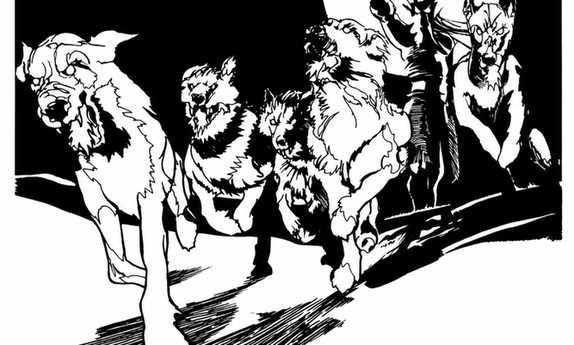

凯尔特神话 · Celtic Mythos
凯尔特神话并不限于不列颠群岛。这里的存在都以人形出现，各有自己的影响领域；凡人或其他生物对这些领域进行重大操弄，就会招致神祇干预。多数神祇的牧师是德鲁伊，圣仪式在橡树与冬青树林举行；季节仪式包括 Samain、Imbalc、Beltane 和 Lugnasad。六级以下德鲁伊穿浅蓝袍，高等级德鲁伊穿白袍，并佩戴代表所侍奉神祇的金属饰环。
达格达 · Dagda
中立强大神，AC −4、生命值 400；18 级战士、15 级牧师／14 级德鲁伊、15 级魔法师／幻术师、20 级吟游诗人。他能把自己分成十二个实体，持有能杀死并复活生物的巨棒，能召来永远不会空的食物锅，并以有知觉的竖琴控制天气。
阿拉温 · Arawn
守序邪恶强大神，AC −4，生命值 325，原初位面；20 级牧师／14 级德鲁伊、17 级游侠、15 级吟游诗人。他能从双眼发射两道死灵法术，使用最高三环法术；若有人复活其领域内的死者，他有机会为亡者战斗或提供死者阶级的替代者。
布莉姬特（火与诗歌女神） · Brigit
中立弱等女神，AC −4，生命值 325。她能像 35 级法师一样使用火焰法术，身边 30 英尺内每轮造成 30 点火焰伤害；+5 火焰法杖每击造成 2–20 点伤害。她会因战场上即兴创作的诗歌而赐福歌者。
库·丘林与杜纳提斯 · Cu Chulainn 与杜纳提斯 Dunatis
库·丘林是中立善良英雄，18 级游侠，AC −1、生命值 150，持 +4 长矛 Gae Bolg，每击 4–40 点伤害，战斗时发出使凡人命中率 −4 的光辉。杜纳提斯是中立弱等神，能瞬间隆起山峰或把山夷为平原；其生命值 350，AC −10。
戈伊布尼、卢格与曼南南·马克·利尔 · Goibhnie、卢格 Lugh 与曼南南·马克·利尔 Manannan Mac Lir
戈伊布尼是神祇铁匠，能制造不会失手的武器、抵消法术的护符，并免疫实体武器。卢格是“长手”强大神，能使用他见过的任何存在的一项属性；其德鲁伊法术达到 30 级。曼南南是海神，常穿 +5 海贝甲，三叉戟会吸走受击者四分之一的生命力，还能召来最多 50 个非神性海洋生物助战。
玛斯、莫瑞甘、努阿达与欧格玛 · Math、莫瑞甘 Morrigan、努阿达 Nuada 与欧格玛 Oghma
玛斯是传奇中的大法师，能听见世界各处风中的话语，并以触碰之杖把生物变成水。莫瑞甘是战争女神，能夺走敌人的勇气、隐形作战，并以两支永不失手的长矛攻击。努阿达是银手战争之神，持 +5 剑并能让武器的伤害翻倍。欧格玛是知识之神和吟游诗人的守护者，能回答问题、知晓非神性生物的真名，并把恶魔与魔鬼封入牢笼。
西尔瓦努斯与荒野猎行 · Silvanus 与荒野猎行 The Wild Hunt
西尔瓦努斯是森林与自然的中立强大神，能控制森林生物、改变植物生长速度，并由一头巨型狼人守卫；德鲁伊树林受威胁时，他有机会现身。

荒野猎行是德鲁伊和凯尔特神祇居住地共有的“活力”显现：黑皮肤、长鹿角的猎行主人率领一群猎犬，在邪恶出现时出发。被它追上的生物必须豁免后加入猎行；十英里范围内几乎没有逃脱办法，除非逃出范围、熬到天明或杀死主人及猎犬。猎行通常追逐制造邪恶的源头，并会迫使被卷入者战斗至死。
物品 · Items
Tathlum 是以敌人头颅和石灰制成的一次性战争武器；Torc of the Gods 是戈伊布尼打造的变形饰环；二者均可作为凯尔特神祇与德鲁伊的特殊战役奖励。